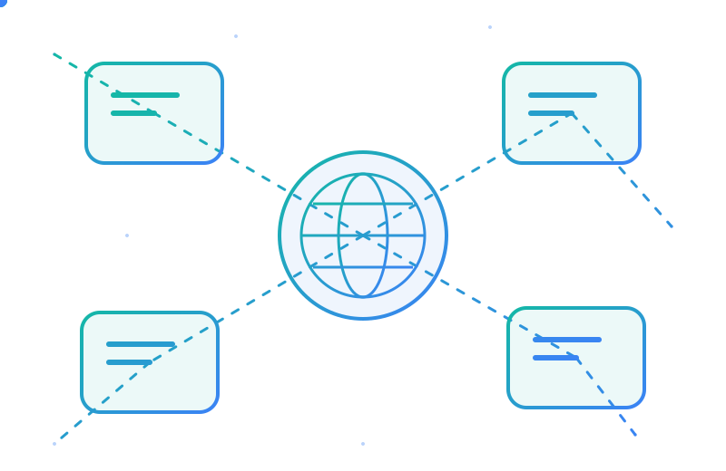

تعلّم شبكات الحاسوب بالعربية، من الصفر
تسعة دروس منظّمة تشرح كيف تعمل الشبكات فعلًا: من الشبكات المحلية وعنونة IP إلى VLAN وTCP/IP واستكشاف الأخطاء. شروحات مبسّطة، رسومات أصلية، واختبارات تفاعلية.

مسارك من الأساسيات إلى التطبيق
ابدأ بمفاهيم LAN وOSI، ثم تعرّف إلى MAC وTCP/IP والعنونة، وانتقل إلى التوجيه وVLAN والتقنيات المتقدمة، واختتم بالتشخيص والأمن.
شاهد ترتيب الدروس التسعةماذا ستجد في الأكاديمية؟
شرح عميق وبسيط
نشرح لماذا وكيف يعمل كل مفهوم، وليس تعريفات للحفظ فقط، مع المصطلحات بالعربية والإنجليزية.
رسومات توضيحية
مخططات أصلية لكل درس مع شرح مفصّل لكل رسم.
اختبارات وتقدّم محفوظ
أسئلة تفاعلية مع تفسير كل إجابة، ويُحفظ تقدمك في حسابك لتكمل من أي جهاز.
الحقل التطبيقي: جرّب بنفسك
شرح مبسّط لكل درس
في نهاية كل درس زر «الحقل التطبيقي» يفتح لك شرحًا قصيرًا جدًا لكيفية عمل الدرس، بخطوات سريعة تناسب المبتدئين.
محاكاة تبني فيها شبكتك
أضف أجهزة وسويتشات وراوترات، وصّلها بالكابلات، واضبط العناوين، ثم جرّب Ping واعرف سبب النجاح أو الفشل.
خطوة أساسية قبل الإكمال
الحقل التطبيقي إجباري: اقرأ الشرح وأنجز مهمة المحاكاة أولًا، ثم تستطيع وضع علامة «مكتمل» على الدرس.